Credit Card Binary Classification
About the data frame
You can find more information about this nice dataset available in Kaggle. We basically want to predict if a person has their credit card approved.
import numpy as np
import pandas as pd
import networkx as nx
import matplotlib.pyplot as plt
import seaborn as sns/home/william/anaconda3/lib/python3.9/site-packages/scipy/__init__.py:146: UserWarning: A NumPy version >=1.16.5 and <1.23.0 is required for this version of SciPy (detected version 1.24.3
warnings.warn(f"A NumPy version >={np_minversion} and <{np_maxversion}"pd.set_option('display.max_rows', 20)
pd.set_option('display.max_columns', 18)
pd.set_option('display.width', 2000)
X = pd.read_csv('datasets/credit/Credit_card.csv')
y = pd.read_csv('datasets/credit/Credit_card_label.csv')
print(X.describe()) Ind_ID CHILDREN Annual_income Birthday_count Employed_days Mobile_phone Work_Phone Phone EMAIL_ID Family_Members
count 1.548000e+03 1548.000000 1.525000e+03 1526.000000 1548.000000 1548.0 1548.000000 1548.000000 1548.000000 1548.000000
mean 5.078920e+06 0.412791 1.913993e+05 -16040.342071 59364.689922 1.0 0.208010 0.309432 0.092377 2.161499
std 4.171759e+04 0.776691 1.132530e+05 4229.503202 137808.062701 0.0 0.406015 0.462409 0.289651 0.947772
min 5.008827e+06 0.000000 3.375000e+04 -24946.000000 -14887.000000 1.0 0.000000 0.000000 0.000000 1.000000
25% 5.045070e+06 0.000000 1.215000e+05 -19553.000000 -3174.500000 1.0 0.000000 0.000000 0.000000 2.000000
50% 5.078842e+06 0.000000 1.665000e+05 -15661.500000 -1565.000000 1.0 0.000000 0.000000 0.000000 2.000000
75% 5.115673e+06 1.000000 2.250000e+05 -12417.000000 -431.750000 1.0 0.000000 1.000000 0.000000 3.000000
max 5.150412e+06 14.000000 1.575000e+06 -7705.000000 365243.000000 1.0 1.000000 1.000000 1.000000 15.000000print(y.columns)Index(['Ind_ID', 'label'], dtype='object')Cleaning data
Let’s start by making sure that both data frames have their ids in the same order.
y = X.merge(y, on='Ind_ID', how='left')['label']Now it’s safe to get rid of Ind_ID column. We don’t want a feature that uniquely tracks specific individuals, per se.
X.drop(columns=['Ind_ID'], inplace=True)We should also look for correlated columns. If two features are, for example, linearly correlated – say np.arange(10) and 2 * np.arange(10) – they basically tell the same information. By removing one of them, we help the model to train with only the necessary features. We don’t want the “same” feature to be appearing in different feature samples in tree models, for example.
sns.heatmap(X.select_dtypes(include=np.number).corr(), cmap="YlGnBu", annot=True)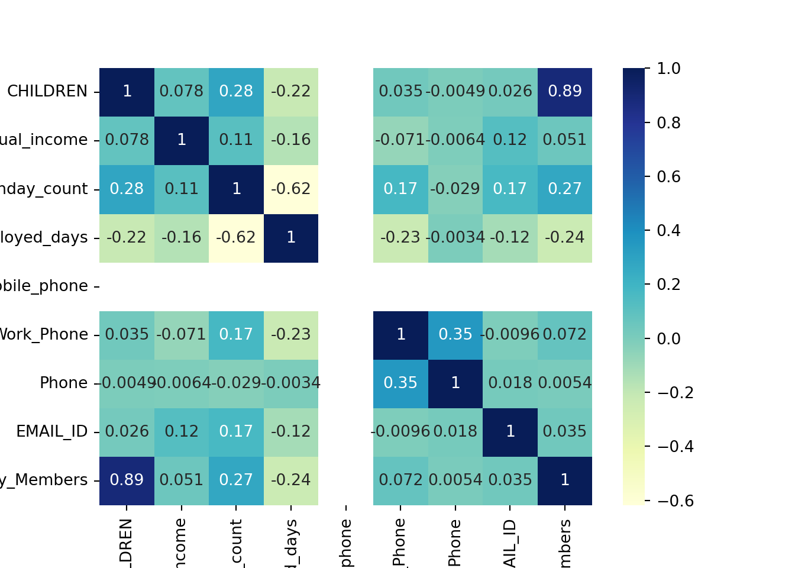
Weirdly enough, the column Mobile_phone has only NaN correlations. That is because the data does not vary. We should remove near-zero variance feature, normally. That will be a step in our pipeline, later.
Also, although CHILDREN and Family_Members are highly correlated, 0.89 might not be enough to drop a column. But I created the function anyway, in case it’s useful later.
def remove_correlated(df, threshold=0.95):
numeric_df = df.select_dtypes(include=np.number)
def too_correlated(x, y):
return df[x].corr(df[y]) > threshold
eqv_classes = nx.equivalence_classes(numeric_df.columns, too_correlated)
eqv_classes_repr = {next(iter(list(eqv_classes)[i])) for i in range(len(eqv_classes))}
return df.drop(columns=set(numeric_df.columns) - eqv_classes_repr)
X = remove_correlated(X, threshold=0.95)Now, it’s important to check the missing values within the data frame.
# Let's check now where there is NaN
print(X[X.isnull().any(axis=1)]) GENDER Car_Owner Propert_Owner CHILDREN Annual_income Type_Income EDUCATION Marital_status Housing_type Birthday_count Employed_days Mobile_phone Work_Phone Phone EMAIL_ID Type_Occupation Family_Members
0 M Y Y 0 180000.0 Pensioner Higher education Married House / apartment -18772.0 365243 1 0 0 0 NaN 2
1 F Y N 0 315000.0 Commercial associate Higher education Married House / apartment -13557.0 -586 1 1 1 0 NaN 2
2 F Y N 0 315000.0 Commercial associate Higher education Married House / apartment NaN -586 1 1 1 0 NaN 2
3 F Y N 0 NaN Commercial associate Higher education Married House / apartment -13557.0 -586 1 1 1 0 NaN 2
4 F Y N 0 315000.0 Commercial associate Higher education Married House / apartment -13557.0 -586 1 1 1 0 NaN 2
... ... ... ... ... ... ... ... ... ... ... ... ... ... ... ... ... ...
1532 M N Y 0 157500.0 Commercial associate Higher education Married House / apartment -15423.0 -1200 1 1 1 0 NaN 2
1535 F N N 0 144000.0 Working Secondary / secondary special Married House / apartment -19984.0 -4662 1 0 1 0 NaN 2
1541 F N Y 2 225000.0 Working Higher education Married House / apartment NaN -1648 1 1 1 0 Accountants 4
1543 F N Y 0 NaN Commercial associate Higher education Married House / apartment -11957.0 -2182 1 0 0 0 Managers 2
1547 F Y Y 0 225000.0 Working Higher education Married House / apartment -16601.0 -2859 1 0 0 0 NaN 2
[523 rows x 17 columns]# Get proportion of NaN present in each column
print(X.apply(lambda x: sum(x.isna()) / len(x), axis=0))GENDER 0.004522
Car_Owner 0.000000
Propert_Owner 0.000000
CHILDREN 0.000000
Annual_income 0.014858
Type_Income 0.000000
EDUCATION 0.000000
Marital_status 0.000000
Housing_type 0.000000
Birthday_count 0.014212
Employed_days 0.000000
Mobile_phone 0.000000
Work_Phone 0.000000
Phone 0.000000
EMAIL_ID 0.000000
Type_Occupation 0.315245
Family_Members 0.000000
dtype: float64This is an interesting situation. Should we remove the data where NaN is present? Well, if NaN data appears during production, we need to be able to predict nonetheless in case they’re present. Some types of models, like xgboost, handle NaN well, so we wouldn’t have to change anything. For other models, we require the NaN values to be replaced by something else, like the median, or by using the knn method. If it’s a categorical variable, the NaN can be encoded by OneHotEncoder anyway. But we could replace them beforehand with the most common value in each feature, if we wanted so. Another interesting approach is to train another model to try to predict the NaN in the columns. This is easily doable by sklearn’s IterativeImputer.
It might be a good idea to check if different “recipes” – called pipelines – lead to more accurate models. For example: if I replace NaN with the mean, will it improve the model’s accuracy measures?
Tuning
Our plan is to use cross-validation, which means that the data preparations mentioned above must be done at each fold (not including the test fold), and not in the training data set beforehand, specially because KNN imputing relies on distances, and consequently the numeric features need to be normalized.
Data transformations in general need to be done at each fold, but there are exceptions, such as one-hot encoding.
from sklearn.compose import ColumnTransformer
from sklearn.preprocessing import OneHotEncoder
encoder = ColumnTransformer([('encode', OneHotEncoder(), X.select_dtypes(include=object).columns)], remainder='passthrough')
encoder.fit(X)ColumnTransformer(remainder='passthrough',
transformers=[('encode', OneHotEncoder(),
Index(['GENDER', 'Car_Owner', 'Propert_Owner', 'Type_Income', 'EDUCATION', 'Marital_status', 'Housing_type', 'Type_Occupation'], dtype='object'))])In a Jupyter environment, please rerun this cell to show the HTML representation or trust the notebook. On GitHub, the HTML representation is unable to render, please try loading this page with nbviewer.org.
ColumnTransformer(remainder='passthrough',
transformers=[('encode', OneHotEncoder(),
Index(['GENDER', 'Car_Owner', 'Propert_Owner', 'Type_Income', 'EDUCATION', 'Marital_status', 'Housing_type', 'Type_Occupation'], dtype='object'))])Index(['GENDER', 'Car_Owner', 'Propert_Owner', 'Type_Income', 'EDUCATION', 'Marital_status', 'Housing_type', 'Type_Occupation'], dtype='object')
OneHotEncoder()
['CHILDREN', 'Annual_income', 'Birthday_count', 'Employed_days', 'Mobile_phone', 'Work_Phone', 'Phone', 'EMAIL_ID', 'Family_Members']
passthrough
X = pd.DataFrame(encoder.transform(X), columns=encoder.get_feature_names_out())
print(X) encode__GENDER_F encode__GENDER_M encode__GENDER_nan encode__Car_Owner_N encode__Car_Owner_Y encode__Propert_Owner_N encode__Propert_Owner_Y encode__Type_Income_Commercial associate encode__Type_Income_Pensioner ... remainder__CHILDREN remainder__Annual_income remainder__Birthday_count remainder__Employed_days remainder__Mobile_phone remainder__Work_Phone remainder__Phone remainder__EMAIL_ID remainder__Family_Members
0 0.0 1.0 0.0 0.0 1.0 0.0 1.0 0.0 1.0 ... 0.0 180000.0 -18772.0 365243.0 1.0 0.0 0.0 0.0 2.0
1 1.0 0.0 0.0 0.0 1.0 1.0 0.0 1.0 0.0 ... 0.0 315000.0 -13557.0 -586.0 1.0 1.0 1.0 0.0 2.0
2 1.0 0.0 0.0 0.0 1.0 1.0 0.0 1.0 0.0 ... 0.0 315000.0 NaN -586.0 1.0 1.0 1.0 0.0 2.0
3 1.0 0.0 0.0 0.0 1.0 1.0 0.0 1.0 0.0 ... 0.0 NaN -13557.0 -586.0 1.0 1.0 1.0 0.0 2.0
4 1.0 0.0 0.0 0.0 1.0 1.0 0.0 1.0 0.0 ... 0.0 315000.0 -13557.0 -586.0 1.0 1.0 1.0 0.0 2.0
... ... ... ... ... ... ... ... ... ... ... ... ... ... ... ... ... ... ... ...
1543 1.0 0.0 0.0 1.0 0.0 0.0 1.0 1.0 0.0 ... 0.0 NaN -11957.0 -2182.0 1.0 0.0 0.0 0.0 2.0
1544 1.0 0.0 0.0 1.0 0.0 1.0 0.0 1.0 0.0 ... 0.0 225000.0 -10229.0 -1209.0 1.0 0.0 0.0 0.0 1.0
1545 0.0 1.0 0.0 0.0 1.0 0.0 1.0 0.0 0.0 ... 2.0 180000.0 -13174.0 -2477.0 1.0 0.0 0.0 0.0 4.0
1546 0.0 1.0 0.0 0.0 1.0 1.0 0.0 0.0 0.0 ... 0.0 270000.0 -15292.0 -645.0 1.0 1.0 1.0 0.0 2.0
1547 1.0 0.0 0.0 0.0 1.0 0.0 1.0 0.0 0.0 ... 0.0 225000.0 -16601.0 -2859.0 1.0 0.0 0.0 0.0 2.0
[1548 rows x 55 columns]Let’s now create various pipelines and use them during cross-validation when training. We will compare the results later.
from sklearn.preprocessing import OneHotEncoder, StandardScaler, MinMaxScalerWe need, before anything else, to split the data between train and test. Here, we stratify to make sure that both of them have similar class proportions. It looks like, by the way, the classes are very imbalanced. Hence, it might be a good idea to tune hyperparameters that try to counter that (such as scale_pos_weight in the case of xgboost), or to upsample the training data set. The latter also needs to be done at each fold (not including the test fold).
from sklearn.model_selection import train_test_split
X_train, X_test, y_train, y_test = train_test_split(X, y, test_size=.2, stratify=y, random_state=42)
print(y_train.value_counts(normalize=True))0 0.886914
1 0.113086
Name: label, dtype: float64print(y_test.value_counts(normalize=True))0 0.887097
1 0.112903
Name: label, dtype: float64
# We'll use this fraction later
y_proportions = y_train.value_counts(normalize=True)
scale_pos_wight_suggestion = y_proportions.loc[0] / y_proportions.loc[1]Upsampling
We’ll try out the upsampling strategy first. Let’s create some pipelines. Each will handle data differently. Eventually, we will apply the different pipelines to different classifiers, to see which performs the best.
from sklearn.experimental import enable_iterative_imputer
from sklearn.impute import SimpleImputer, IterativeImputer, KNNImputer
# from sklearn.pipeline import Pipeline
# We want imblearn's Pipeline method so that we can upsample
from imblearn.pipeline import Pipeline
from sklearn.feature_selection import VarianceThreshold
from sklearn.model_selection import StratifiedKFold
from imblearn.over_sampling import SMOTE
simple_pipe = Pipeline([
('impute', SimpleImputer(strategy='median')),
('z_step', VarianceThreshold(threshold=0.05)),
('upsample', SMOTE(random_state=42))
])
knn_pipe = Pipeline([
('scale', MinMaxScaler()),
('impute', KNNImputer(n_neighbors=4, weights="uniform")),
('z_step', VarianceThreshold(threshold=0.05)),
('upsample', SMOTE(random_state=42))
])
iter_pipe = Pipeline([
('scale', StandardScaler()),
('impute', IterativeImputer(max_iter=10, random_state=0)),
('z_step', VarianceThreshold(threshold=0.05)),
('upsample', SMOTE(random_state=42))
])Just to make things easier, we can create a “workflow” class, to store an “engine” such as random forest or xgboost, and some pipelines. We can also define a method that, for each pipeline added, we train the model and store the results.
Here, our grid is set to choose the best model based on the F1 score, which rewards a balance between recall (sensitivity) and specificity.
from sklearn.model_selection import GridSearchCV
from sklearn.base import clone
class ModelWorkflow(object):
def __init__(self, name, fit_method, param_gridcv, extra_step_param=None):
self.name = name
self.pipes = {}
self.fit_method = fit_method
self.param_gridcv = param_gridcv
self.extra_step_param = extra_step_param
self.grid_results = None
def add_pipe(self, pipe_name, pipe):
old_dict = self.pipes
self.pipes[pipe_name] = pipe
return self
def train_wf(self, train_data, target_data):
self.grid_results = {}
for pipename, pipe in self.pipes.items():
skfolds = StratifiedKFold(n_splits=4, shuffle=True, random_state=42)
# We don't want to take the risk of modifying the same Pipeline over and over. Let's clone.
pipeline_for_cv = clone(pipe)
# add the engine step to the Pipeline
pipeline_for_cv.steps.append(['engine', eval(self.fit_method)])
# rename the grid params (it needs to have the last step name)
renamed_param_gridcv = {f"engine__{k}":v for k,v in self.param_gridcv.items()}
# add extra params for grid, if declared, and if there is a step with the same name
step_names = [x[0] for x in pipe.steps]
for k, v in self.extra_step_param.items():
extra_param_target = k.split('__')[0]
if extra_param_target in step_names:
renamed_param_gridcv[k] = v
gridcv = GridSearchCV(pipeline_for_cv, renamed_param_gridcv, cv=skfolds,
scoring={'AUC': 'roc_auc', 'F1': 'f1', 'Precision': 'precision', 'Recall': 'recall'},
return_train_score=True,
refit='F1', verbose=10)
self.grid_results[pipename] = gridcv.fit(train_data, target_data)
return self
def get_wf_results(self):
results_list = [pd.concat([
pd.DataFrame(self.grid_results[pipe].cv_results_).filter(regex=r'mean_test')
,pd.DataFrame(self.grid_results[pipe].cv_results_['params'])],
axis=1
).assign(wf_Pipe=pipe)
for pipe in self.pipes.keys()
]
return pd.concat(results_list, axis=0, ignore_index=True).sort_values('mean_test_F1', ascending=False)Now we can create a workflow for both random forest and xgboost, for example.
As of xgboost, we need to be careful with the parameters. With a small dataset like this, I would initially expect that shallow trees might be better. Which, consequently, incentivises us to tune the gamma parameter.
from sklearn.ensemble import RandomForestClassifier
import xgboost
wf_rf = ModelWorkflow(
name='RF',
fit_method='RandomForestClassifier(class_weight="balanced")',
param_gridcv={'n_estimators': [30, 50, 100], 'max_features': ['sqrt', 'log2'], 'min_samples_split': [2, 4, 6]}
) \
.add_pipe('simple', simple_pipe) \
.add_pipe('knn', knn_pipe) \
.add_pipe('iter', iter_pipe)
wf_xgb = ModelWorkflow(
name='XGB',
fit_method='xgboost.XGBClassifier(objective="binary:logistic")',
param_gridcv={
'gamma': [0, 1, 4, 10],
'colsample_bytree': [0.8, 1],
'subsample': [0.6, 0.8],
'max_depth': [6, 10],
'scale_pos_weight': [1, 4, 8, 12],
'eta': [0.04, 0.1, 0.3]
}
) \
.add_pipe('simple', simple_pipe) \
.add_pipe('knn', knn_pipe) \
.add_pipe('iter', iter_pipe)We train by calling the method train_wf that we created.
wf_rf.train_wf(X_train, y_train)
wf_xgb.train_wf(X_train, y_train)And we print the best results for each workflow.
print(wf_rf.get_wf_results().head(n=20)) mean_test_AUC mean_test_F1 mean_test_Precision mean_test_Recall engine__max_depth engine__max_features engine__min_samples_split engine__n_estimators wf_Pipe
30 0.738630 0.469476 0.585508 0.392857 NaN sqrt 2 100 knn
48 0.750864 0.466795 0.646520 0.371429 NaN sqrt 2 100 iter
33 0.734520 0.459680 0.585474 0.378571 NaN log2 2 100 knn
12 0.743153 0.451245 0.725280 0.328571 NaN sqrt 2 100 simple
51 0.751455 0.444393 0.642857 0.342857 NaN log2 2 100 iter
31 0.731682 0.439815 0.618632 0.342857 NaN sqrt 4 100 knn
15 0.755419 0.429224 0.720105 0.307143 NaN log2 2 100 simple
49 0.739662 0.403445 0.600578 0.307143 NaN sqrt 4 100 iter
32 0.726547 0.402181 0.573315 0.314286 NaN sqrt 6 100 knn
24 0.693599 0.398383 0.455233 0.357143 10.0 sqrt 2 100 knn
34 0.718022 0.393078 0.551116 0.307143 NaN log2 4 100 knn
16 0.757634 0.385612 0.720617 0.264286 NaN log2 4 100 simple
52 0.735575 0.379122 0.599834 0.278571 NaN log2 4 100 iter
13 0.746590 0.363839 0.686837 0.250000 NaN sqrt 4 100 simple
9 0.729660 0.360757 0.648352 0.250000 10.0 log2 2 100 simple
35 0.727836 0.360735 0.590370 0.264286 NaN log2 6 100 knn
50 0.733367 0.358698 0.609537 0.257143 NaN sqrt 6 100 iter
27 0.684026 0.356067 0.416853 0.314286 10.0 log2 2 100 knn
42 0.701232 0.349093 0.436640 0.292857 10.0 sqrt 2 100 iter
7 0.736069 0.335244 0.644805 0.228571 10.0 sqrt 4 100 simpleprint(wf_xgb.get_wf_results().head(n=20)) mean_test_AUC mean_test_F1 mean_test_Precision mean_test_Recall engine__colsample_bytree engine__eta engine__gamma engine__max_depth engine__scale_pos_weight engine__subsample wf_Pipe
331 0.735590 0.515570 0.588192 0.464286 1.0 0.3 0 10 4 0.8 simple
75 0.736191 0.512626 0.590888 0.457143 0.8 0.1 0 10 4 0.8 simple
77 0.740194 0.510965 0.568632 0.471429 0.8 0.1 0 10 8 0.8 simple
332 0.732187 0.510458 0.538646 0.485714 1.0 0.3 0 10 8 0.6 simple
323 0.734653 0.509990 0.557581 0.471429 1.0 0.3 0 6 4 0.8 simple
141 0.739883 0.508434 0.555066 0.471429 0.8 0.3 0 10 8 0.8 simple
143 0.736651 0.507602 0.540142 0.485714 0.8 0.3 0 10 12 0.8 simple
131 0.732952 0.506534 0.562734 0.464286 0.8 0.3 0 6 4 0.8 simple
139 0.745379 0.505761 0.584492 0.450000 0.8 0.3 0 10 4 0.8 simple
271 0.728902 0.502959 0.536769 0.478571 1.0 0.1 0 10 12 0.8 simple
333 0.742393 0.501611 0.537428 0.478571 1.0 0.3 0 10 8 0.8 simple
266 0.744086 0.500251 0.571970 0.450000 1.0 0.1 0 10 4 0.6 simple
138 0.735399 0.499829 0.550993 0.464286 0.8 0.3 0 10 4 0.6 simple
911 0.745287 0.497154 0.482826 0.514286 0.8 0.3 0 10 12 0.8 iter
267 0.739617 0.497026 0.548581 0.457143 1.0 0.1 0 10 4 0.8 simple
334 0.731590 0.496459 0.502671 0.492857 1.0 0.3 0 10 12 0.6 simple
327 0.724803 0.496364 0.493590 0.500000 1.0 0.3 0 6 12 0.8 simple
79 0.727776 0.496086 0.524568 0.478571 0.8 0.1 0 10 12 0.8 simple
321 0.733050 0.495631 0.610765 0.421429 1.0 0.3 0 6 1 0.8 simple
330 0.736805 0.495289 0.537326 0.464286 1.0 0.3 0 10 4 0.6 simpleWe then define a function to see the effect of the tuning. It could also be a method for our workflow class, if we really wanted.
def plot_tuning_results(df):
hyperparameters = list(filter(lambda x: '__' in x, df.columns))
hyperparameters = list(filter(lambda x: len(set(df[x])) > 1, hyperparameters))
fig, axs = plt.subplots(1, len(hyperparameters))
fig.set_figwidth(18)
fig.set_figheight(5)
for i, param in enumerate(hyperparameters):
sns.boxplot(x=df[param].fillna(np.inf), y=df['mean_test_F1'], ax=axs[i])
axs[i].set_xlabel(param)
return figplot_tuning_results(wf_rf.get_wf_results())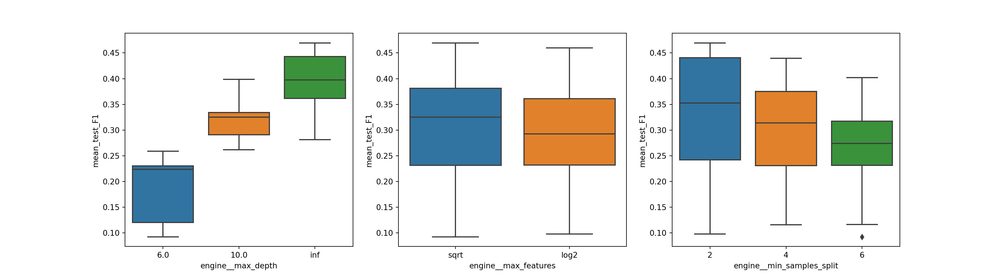
plot_tuning_results(wf_xgb.get_wf_results())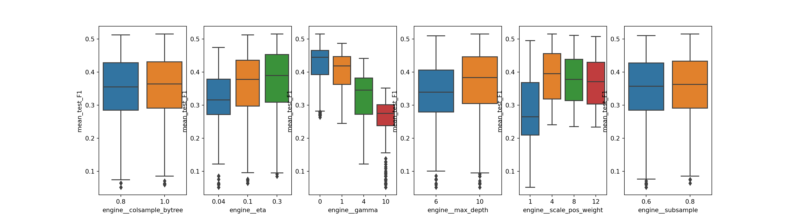
And…. gamma led to poor results. As we can also see in the random forest results, it seems like complex models are performing better. Shallow trees seem not to be the way to go.
Hence, we should try to tune xgboost again with a better range of hyperparameters within the grid. We could try min_child_weight out, too, instead of gamma. It stops the node from splitting if the sample size there is below some number. It may stop an eventual overfitting for that reason. But, again, increasing min_child_weight might lead to less complex trees and worse results, in this particular dataset.
Also, we can remove some hyperparameters from the tuning, and some pipelines, too, since simple_pipe got better results for xgboost during cross-validation. This is a risky move, because we don’t know how things perform in the testing set. But I want to make things simple in this article.
wf_xgb_2 = ModelWorkflow(
name='XGB',
fit_method='xgboost.XGBClassifier(objective="binary:logistic")',
param_gridcv={
'subsample': [0.8, 0.9],
'max_depth': [10, 15, 20],
'scale_pos_weight': [3, 4],
'eta': [0.3, 0.4, 0.5],
'min_child_weight': [1, 2, 3]
}
) \
.add_pipe('simple', simple_pipe)wf_xgb.train_wf(X_train, y_train)print(wf_xgb_2.get_wf_results().head(n=20)) mean_test_AUC mean_test_F1 mean_test_Precision mean_test_Recall engine__eta engine__max_depth engine__min_child_weight engine__scale_pos_weight engine__subsample wf_Pipe
48 0.748011 0.535849 0.675998 0.450000 0.4 15 1 3 0.8 simple
74 0.721122 0.528857 0.596817 0.478571 0.5 10 1 4 0.8 simple
60 0.748307 0.521880 0.622366 0.457143 0.4 20 1 3 0.8 simple
39 0.731866 0.521422 0.589169 0.471429 0.4 10 1 4 0.9 simple
26 0.737919 0.518778 0.593019 0.464286 0.3 20 1 4 0.8 simple
13 0.739412 0.516436 0.600056 0.457143 0.3 15 1 3 0.9 simple
2 0.735590 0.515570 0.588192 0.464286 0.3 10 1 4 0.8 simple
24 0.727153 0.514035 0.578263 0.464286 0.3 20 1 3 0.8 simple
14 0.745456 0.511788 0.574588 0.464286 0.3 15 1 4 0.8 simple
38 0.752939 0.511211 0.573123 0.464286 0.4 10 1 4 0.8 simple
50 0.735515 0.509653 0.558957 0.471429 0.4 15 1 4 0.8 simple
25 0.751200 0.508937 0.578508 0.457143 0.3 20 1 3 0.9 simple
22 0.741642 0.508929 0.554377 0.471429 0.3 15 3 4 0.8 simple
40 0.730735 0.507735 0.566155 0.464286 0.4 10 2 3 0.8 simple
0 0.739581 0.506632 0.580987 0.457143 0.3 10 1 3 0.8 simple
83 0.713926 0.506455 0.548896 0.471429 0.5 10 3 4 0.9 simple
27 0.733862 0.506201 0.560227 0.464286 0.3 20 1 4 0.9 simple
36 0.739039 0.506063 0.573751 0.457143 0.4 10 1 3 0.8 simple
37 0.736360 0.503953 0.573942 0.450000 0.4 10 1 3 0.9 simple
86 0.736442 0.503385 0.563293 0.457143 0.5 15 1 4 0.8 simpleplot_tuning_results(wf_xgb_2.get_wf_results())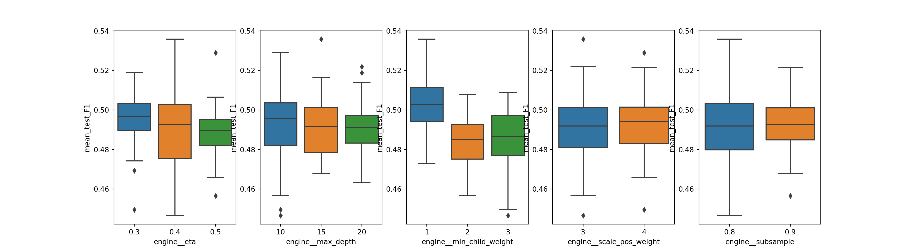
It seems like we got better results for xgboost with this last tuning.
We could go on tweaking the hyperparamters over and over. For the sake of this case, we will stop right here.
Let’s get the best parameters for random forest and xgboost, and see how they go in the test data frame. See: we have only analysed the performance during cross-validation. Fitting the pipelines in the entire training dataset will lead to a different “transformer”, and consequently a different model. It may or may not overfit. We often expect that the results during cross-validation testing will also be observed when we train on the whole training set and apply on the testing set we have splitted before, but this not necessarily happens. We hope it does, because that’s one of the purposes of cross-validation itself.
Thankfully, the grid results has the attribute best_estmator_. It’s already retrained with the whole training dataset, as long as GridSearchCV is initialized with refit=True, or with a scorer, which is the case.
We can get the best pipeline for each workflow, then get the best estimator and check the results in the test set.
from sklearn.metrics import confusion_matrix, ConfusionMatrixDisplay, f1_score, accuracy_score, recall_score, \
precision_score
def compare_workflows(wf_list):
df_wf = pd.DataFrame({'Workflow': wf_list})
df_wf['Pipeline'] = [list(eval(x).pipes.keys()) for x in df_wf['Workflow']]
df_wf = df_wf.explode('Pipeline').reset_index(drop=True)
df_wf['Metric'] = [['f1_score', 'recall_score', 'precision_score', 'accuracy_score']] * len(df_wf)
df_wf = df_wf.explode('Metric').reset_index(drop=True)
df_wf['Score'] = [eval(metric)(eval(wf).grid_results[pipe].best_estimator_.predict(X_test), y_test)
for (wf, pipe, metric)
in zip(df_wf['Workflow'], df_wf['Pipeline'], df_wf['Metric'])
]
# For each workflow, get the Pipeliene that yields the best f1_score
df_f1 = df_wf.loc[df_wf['Metric'] == 'f1_score']
df_wf = df_wf.merge(df_f1 \
.loc[df_f1.groupby('Workflow')['Score'].idxmax()] \
.loc[:, ['Workflow', 'Pipeline']]
, how='inner').reset_index(drop=True)
print(sns.relplot(kind='line', data=df_wf, x='Metric', y='Score', hue='Workflow'))
return df_wf
compare_workflows(['wf_rf', 'wf_xgb', 'wf_xgb_2'])<seaborn.axisgrid.FacetGrid object at 0x7ff517399e80>
Workflow Pipeline Metric Score
0 wf_rf simple f1_score 0.592593
1 wf_rf simple recall_score 0.842105
2 wf_rf simple precision_score 0.457143
3 wf_rf simple accuracy_score 0.929032
4 wf_xgb knn f1_score 0.613333
5 wf_xgb knn recall_score 0.575000
6 wf_xgb knn precision_score 0.657143
7 wf_xgb knn accuracy_score 0.906452
8 wf_xgb_2 simple f1_score 0.542373
9 wf_xgb_2 simple recall_score 0.666667
10 wf_xgb_2 simple precision_score 0.457143
11 wf_xgb_2 simple accuracy_score 0.912903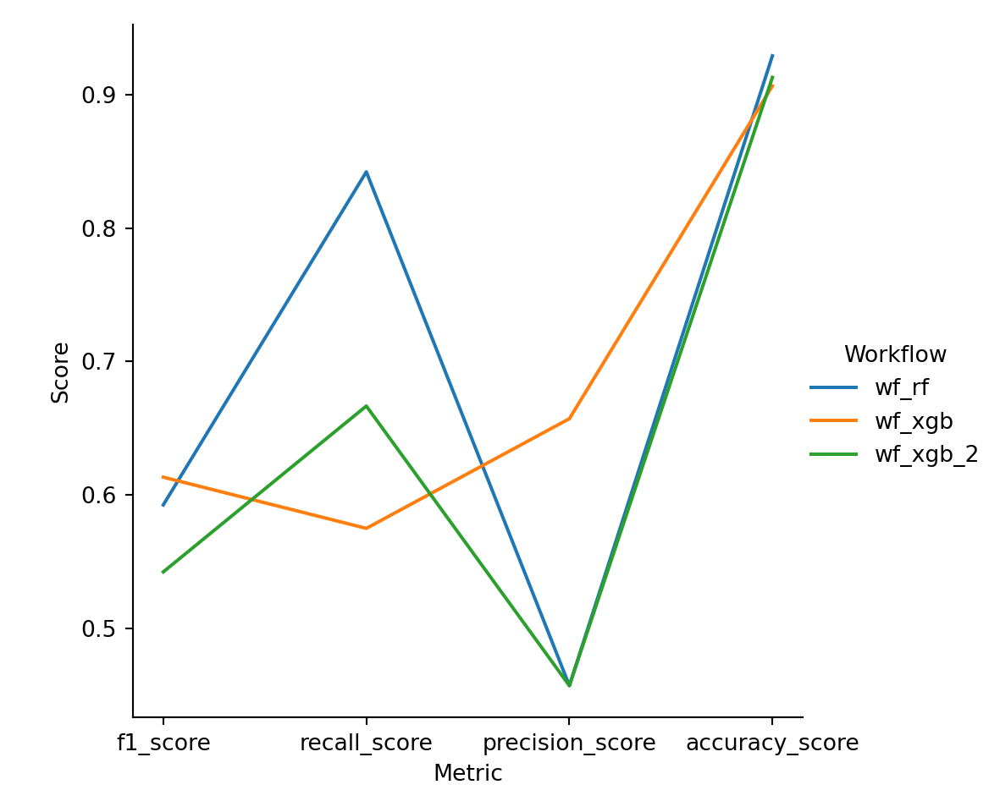
It’s relatively difficult to compare wf_rf and wf_xgb here, because we have tuned wuth refit='F1'. Although these models we trained have similar F1 score, the relation between precision and recall are different. So we should choose the model depending of our purposes. Do we want better precision or better recall? Might be a good idea to tune with refit='Recall' instead, for example, and then select the best F1.
What’s interesting is: although our second xgboost tuning led us to believe that we got better hyperparameters, it was outperformed by random forest in all the metrics.
We conclude here the training with a F1 score of 0.613333.
For a better visualization, we plot the confusion matrix.
cm = confusion_matrix(y_test, wf_xgb.grid_results['knn'].best_estimator_.predict(X_test))
disp = ConfusionMatrixDisplay(confusion_matrix=cm)
disp.plot()<sklearn.metrics._plot.confusion_matrix.ConfusionMatrixDisplay object at 0x7ff5173c9f10>plt.show()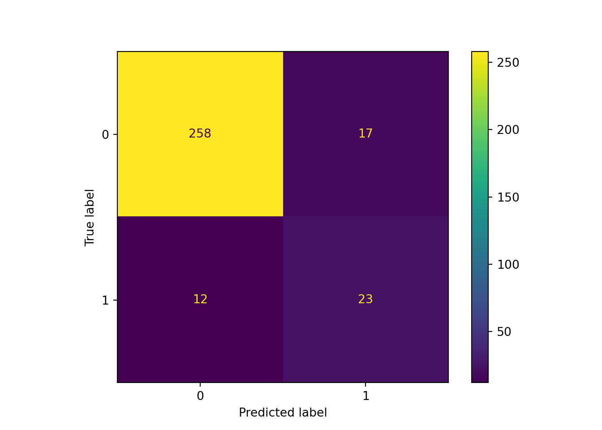
Without upsampling
Here we create some pipelines that don’t include the upsampling step. We’ll see how it goes.
noup_simple_pipe = Pipeline([
('impute', SimpleImputer(strategy='median')),
('z_step', VarianceThreshold(threshold=0.05))
])
noup_knn_pipe = Pipeline([
('scale', MinMaxScaler()),
('impute', KNNImputer(n_neighbors=4, weights="uniform")),
('z_step', VarianceThreshold(threshold=0.05))
])
noup_iter_pipe = Pipeline([
('scale', StandardScaler()),
('impute', IterativeImputer(max_iter=10, random_state=0)),
('z_step', VarianceThreshold(threshold=0.05))
])wf_noup_rf = ModelWorkflow(
name='RF',
fit_method='RandomForestClassifier(class_weight="balanced")',
param_gridcv={'n_estimators': [100], 'max_features': ['sqrt', 'log2'], 'min_samples_split': [2, 4, 6]
, 'max_depth': [6, 10, None]}
) \
.add_pipe('noup_simple', noup_knn_pipe) \
.add_pipe('noup_knn', noup_knn_pipe) \
.add_pipe('noup_iter', noup_iter_pipe)
wf_noup_xgb = ModelWorkflow(
name='XGB',
fit_method='xgboost.XGBClassifier(objective="binary:logistic")',
param_gridcv={
'gamma': [0, 1, 4, 10],
'colsample_bytree': [0.8, 1],
'subsample': [0.6, 0.8],
'max_depth': [6, 10, 14],
'scale_pos_weight': [1, 4, 8, 12, scale_pos_wight_suggestion],
'eta': [0.04, 0.1, 0.3]
}
) \
.add_pipe('simple', simple_pipe) \
.add_pipe('knn', knn_pipe) \
.add_pipe('iter', iter_pipe)
wf_noup_rf.train_wf(X_train, y_train)
wf_noup_xgb.train_wf(X_train, y_train)We compare the results with the upsampling ones.
compare_workflows(['wf_rf', 'wf_xgb', 'wf_xgb_2', 'wf_noup_rf', 'wf_noup_xgb'])<seaborn.axisgrid.FacetGrid object at 0x7ff5170caf10>
Workflow Pipeline Metric Score
0 wf_rf simple f1_score 0.592593
1 wf_rf simple recall_score 0.842105
2 wf_rf simple precision_score 0.457143
3 wf_rf simple accuracy_score 0.929032
4 wf_xgb knn f1_score 0.613333
5 wf_xgb knn recall_score 0.575000
6 wf_xgb knn precision_score 0.657143
7 wf_xgb knn accuracy_score 0.906452
8 wf_xgb_2 simple f1_score 0.542373
9 wf_xgb_2 simple recall_score 0.666667
10 wf_xgb_2 simple precision_score 0.457143
11 wf_xgb_2 simple accuracy_score 0.912903
12 wf_noup_rf noup_simple f1_score 0.655172
13 wf_noup_rf noup_simple recall_score 0.826087
14 wf_noup_rf noup_simple precision_score 0.542857
15 wf_noup_rf noup_simple accuracy_score 0.935484
16 wf_noup_xgb simple f1_score 0.625000
17 wf_noup_xgb simple recall_score 0.689655
18 wf_noup_xgb simple precision_score 0.571429
19 wf_noup_xgb simple accuracy_score 0.922581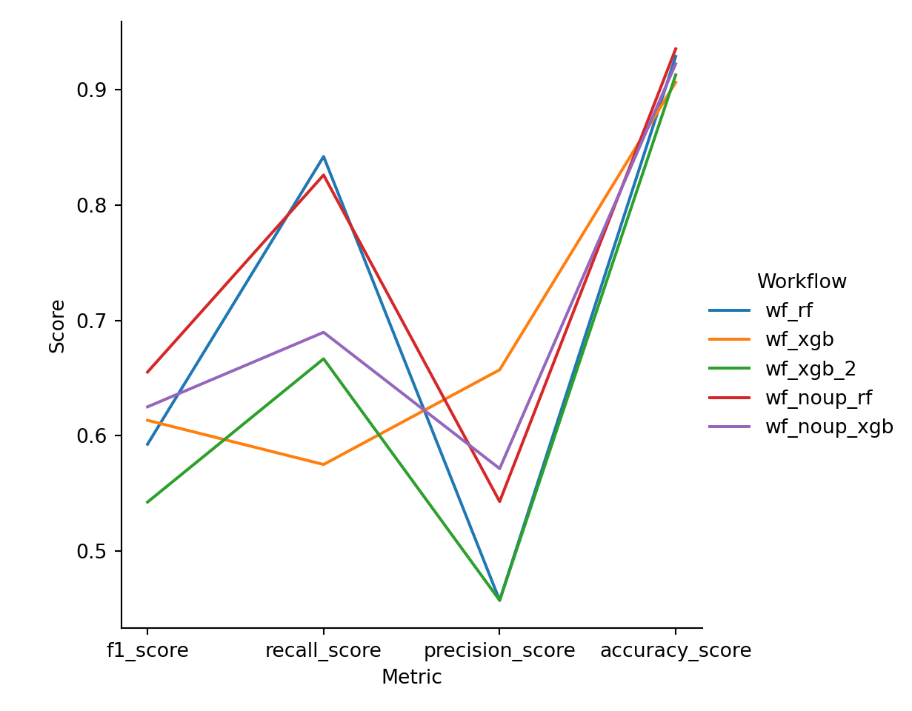
Models performed better without upsampling.
Now we have a better F1: 0.655172.
cm = confusion_matrix(y_test, wf_noup_rf.grid_results['noup_simple'].best_estimator_.predict(X_test))
disp = ConfusionMatrixDisplay(confusion_matrix=cm)
disp.plot()<sklearn.metrics._plot.confusion_matrix.ConfusionMatrixDisplay object at 0x7ff517645e80>plt.show()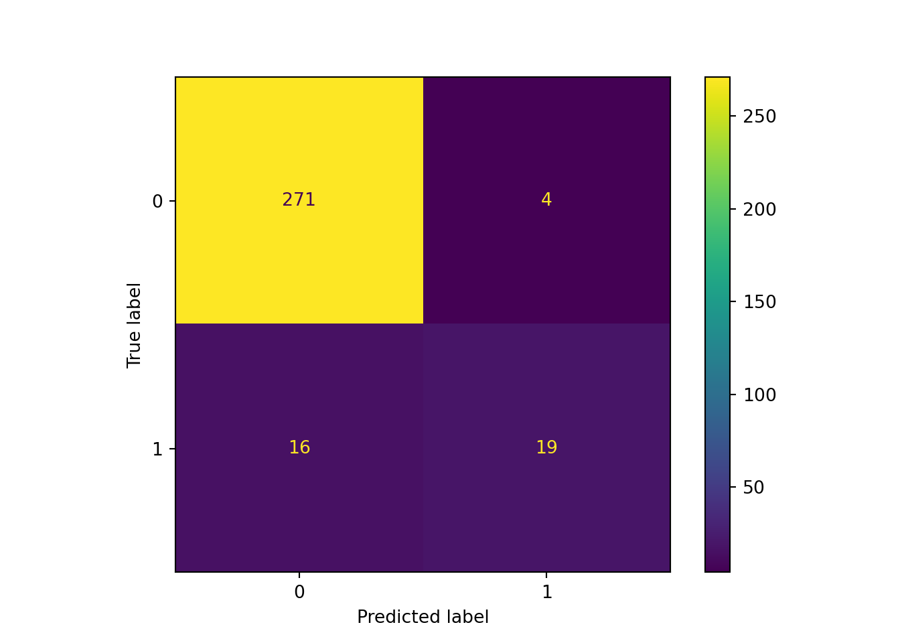
PCA
Principal component analysis (PCA) is an unsupervised method that uses linear combinations of features to define new ones. It’s basically a method used to reduce dimensionality. Before applying it, you really need to standardize the features, because skewed distributions tend to harm variance calculations.
from sklearn.decomposition import PCA
pca_pipe = Pipeline([
('impute', SimpleImputer(strategy='median')),
('z_step', VarianceThreshold(threshold=0.05)),
('scale', StandardScaler()),
('PCA', PCA())
])wf_pca_rf = ModelWorkflow(
name='RF',
fit_method='RandomForestClassifier(class_weight="balanced")',
param_gridcv={'n_estimators': [100], 'max_features': ['sqrt', 'log2'], 'min_samples_split': [2, 4, 6]
, 'max_depth': [6, 10, None]},
extra_step_param={'PCA__n_components': [None, 4, 7, 14, 21]}
) \
.add_pipe('pca', pca_pipe)
wf_pca_xgb = ModelWorkflow(
name='XGB',
fit_method='xgboost.XGBClassifier(objective="binary:logistic")',
param_gridcv={
'max_depth': [6, 10, 14, 18],
'scale_pos_weight': [1, 4, 8, 12, scale_pos_wight_suggestion],
'eta': [0.04, 0.1, 0.3]
},
extra_step_param={'PCA__n_components': [None, 4, 7, 14, 21]}
) \
.add_pipe('pca', pca_pipe)
wf_pca_rf.train_wf(X_train, y_train)
wf_pca_xgb.train_wf(X_train, y_train)compare_workflows(['wf_noup_rf', 'wf_noup_xgb', 'wf_pca_rf', 'wf_pca_xgb'])<seaborn.axisgrid.FacetGrid object at 0x7ff516ee6eb0>
Workflow Pipeline Metric Score
0 wf_noup_rf noup_simple f1_score 0.655172
1 wf_noup_rf noup_simple recall_score 0.826087
2 wf_noup_rf noup_simple precision_score 0.542857
3 wf_noup_rf noup_simple accuracy_score 0.935484
4 wf_noup_xgb simple f1_score 0.625000
5 wf_noup_xgb simple recall_score 0.689655
6 wf_noup_xgb simple precision_score 0.571429
7 wf_noup_xgb simple accuracy_score 0.922581
8 wf_pca_rf pca f1_score 0.530612
9 wf_pca_rf pca recall_score 0.928571
10 wf_pca_rf pca precision_score 0.371429
11 wf_pca_rf pca accuracy_score 0.925806
12 wf_pca_xgb pca f1_score 0.528302
13 wf_pca_xgb pca recall_score 0.777778
14 wf_pca_xgb pca precision_score 0.400000
15 wf_pca_xgb pca accuracy_score 0.919355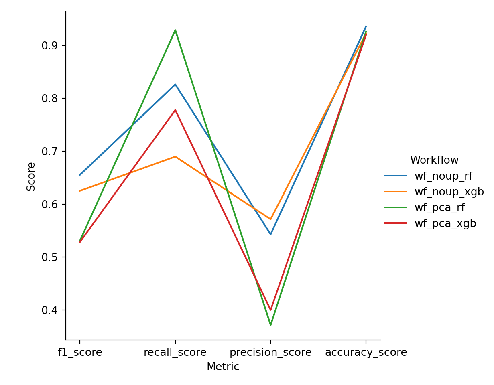
So, PCA led to worse results. This probably means that the variables created do not separate well between y labels. Let’s check that. First, let’s see the best number of components.
plot_tuning_results(wf_pca_rf.get_wf_results())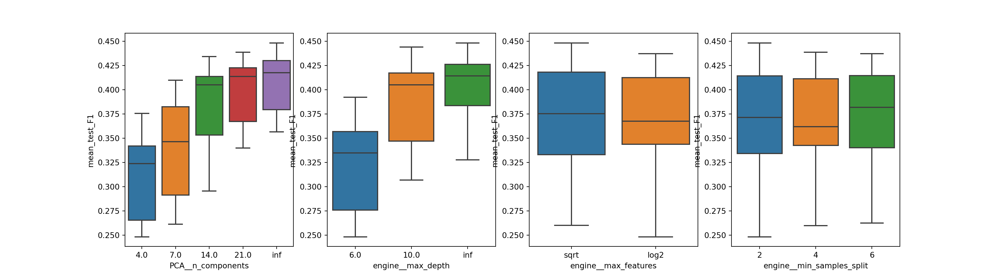
plot_tuning_results(wf_pca_xgb.get_wf_results())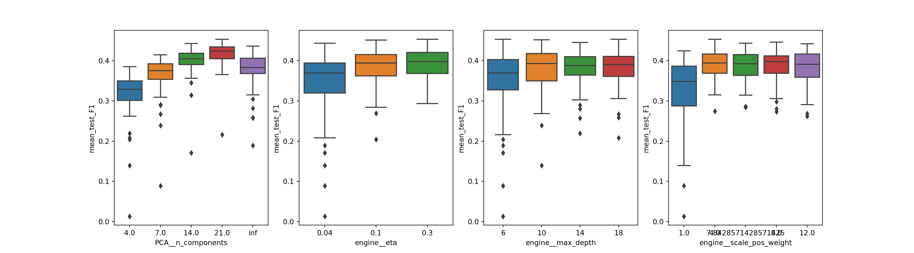
Which is 21.
Let’s create the pipe with this configuration, and transform. Pairplotting with 21 variables might not be the best idea, unless you want to transform your computer into a launching spaceship. We’ll plot only the first three components. See how the label is entangled in the data.
pca_test_pipe = Pipeline([
('impute', SimpleImputer(strategy='median')),
('z_step', VarianceThreshold(threshold=0.05)),
('scale', StandardScaler()),
('PCA', PCA(n_components = 21))
])
X_train_pca_transformed = pd.DataFrame(pca_test_pipe.fit_transform(X_train),
columns=pca_test_pipe.get_feature_names_out())
X_train_pca_transformed = pd.concat([X_train_pca_transformed, y_train.reset_index(drop=True)], axis=1)print(sns.pairplot(X_train_pca_transformed.loc[:, ['pca0', 'pca1', 'pca2', 'label']]
, hue='label', diag_kind='kde'))
However, let’s remember that we are feeding PCA with encoded categorical values. PCA is better for continuous variables, not binary (encoded) ones. We could try again, with a better pipeline that one-hot encodes after PCA. Since we already split X in training and testing, together with the fact that variables are not much correlated in the original dataset anyway, we’ll stop here. PCA really shines when there are correlated features.